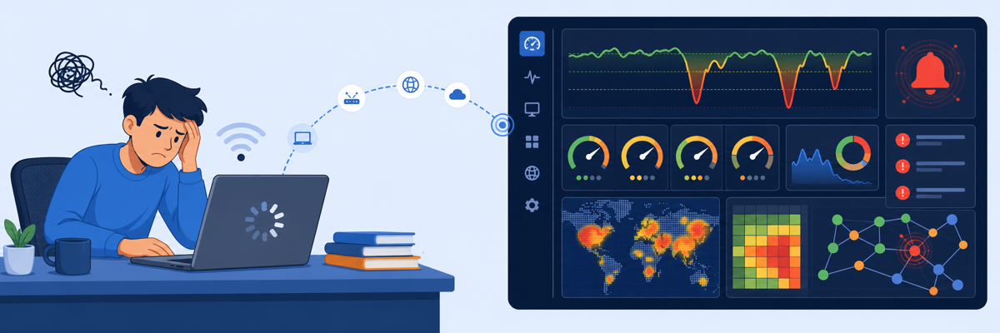
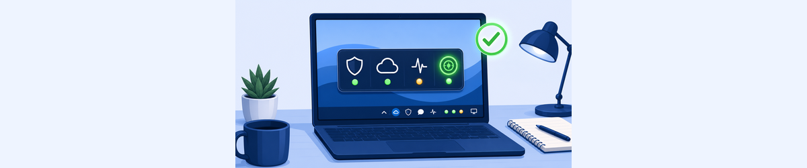
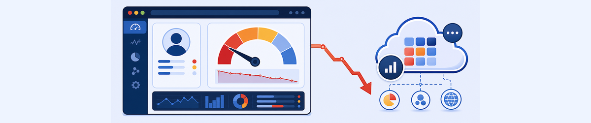
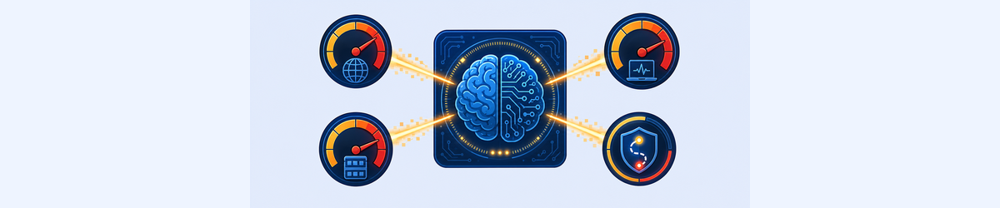
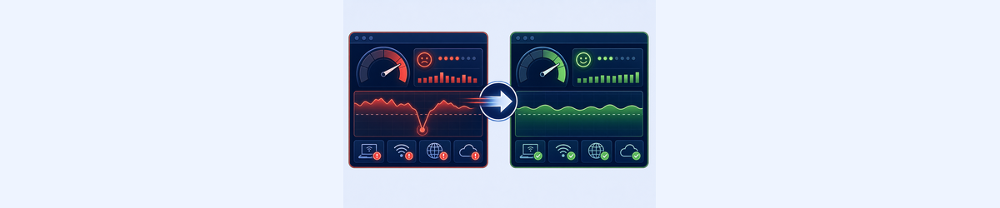
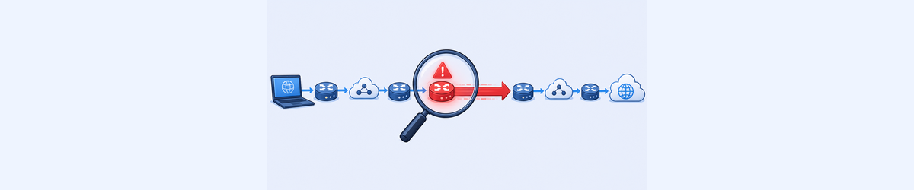
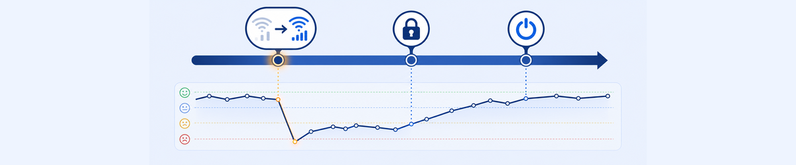
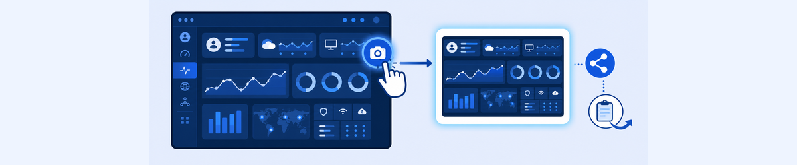

Lab 7: Troubleshooting User Experience Issues with ZDX
Scenario: A user (Curtis Hardwick) is reporting poor user experience with frequent disconnections and slow internet speeds. Your organisation has deployed ZDX to proactively monitor network and device performance. You will diagnose the root cause using ZDX tools.

The ZDX score is not just a number — it’s a correlated view of network path latency, application response time, and device health. Understanding what the score measures tells you which direction to dig.
- The ZDX Score fluctuates between Good (75+) and Poor (under 40). When you use the Analyze Score feature on a Poor data point, ZDX returns a confidence-ranked list of contributing factors. What is the difference between a factor with 91% confidence vs. one with 6% confidence in terms of how you should respond?
- The Cloud Path hop view shows latency measured at each hop: Client → Gateway → Egress → Application. In the example, 319ms of the 339ms total end-to-end latency is on the first hop (Client to Gateway). What does this isolate as the root cause, and which team should own the resolution?
- A ZDX Snapshot can be shared with others. Why should an analyst always use the Obfuscate Data option when sharing snapshots externally — and what does it hide?
Task 7.1: Checking Zscaler Client Connector
1 Verify ZDX Service Status in ZCC
- On the Corp: Client PC, open Zscaler Client Connector and click the Digital Experience tab (the person-with-circle icon in the left sidebar).
- Verify the status information:
- Service Status: ON
- Authentication Status: Authenticated
- To simulate a user who inadvertently turned off the ZDX service:
- In Client Connector, click Service Status: Turn Off
- Open the ZSATray log file from the exported ZCC log bundle
- Search for the line:
UI: User clicked turn off upm service— this confirms the action was user-initiated and is recorded in the client log - Close the log file and turn the ZDX service back On
- As another quick troubleshooting option: click Restart ZDX Service to restart the ZDX collection process without requiring re-authentication.
Note: If the Digital Experience tab is not present in ZCC, check Administration > Zscaler Service Entitlement in the ZCC Portal to verify the ZDX service is enabled. You can also check Windows Task Manager → Services to confirm the ZSAUpm process is running.

Task 7.2: View User ZDX Score for an Application
2 Find the User in the ZDX Portal
- In a new browser window, go to the ZDX Admin Portal:
https://admin.zdxcloud.net(a bookmark is provided). - Sign in with your ZIA Admin User ID (
ptcb32-ADMIN@thezerotrustexchange.com) and Session Password (<Session Password>). - Click Search in the left navigation bar.
- Start typing
Curtisin the search box. Select Curtis Hardwick from the search results. - On the user report page, set the time period to 48 Hours.
- Select the application Salesforce Lightning from the application tiles at the top of the page.
- View the ZDX Score Over Time graph. Observe that the ZDX score is fluctuating often between Good and Poor.

Task 7.3: Analyze Poor ZDX Score Interval
3 Use Analyze Score to Identify Root Cause Factors
- In the ZDX Score Over Time graph, identify a time period when the ZDX score is Poor. Click and drag to zoom in on that time period.
- Click to set the cursor on a specific data point in the Poor score region.
- View the ZDX Score displayed for that sample point.
- Click Analyze Score. Analysis will take a few seconds to complete.
- View the analysis results in the table titled “The following factors that might have impacted the ZDX score”. Note the factors listed and their confidence levels:
- Low Wifi Signal — Explanation: Weak Wi-Fi signal strength detected — Confidence: ~91%
- Suboptimal Wifi — Explanation: Degraded user performance detected after connecting to Wi-Fi (SSID: 3Com_Wifi) — Confidence: ~6%
Note: Your results will differ from these examples because traffic in the lab is simulated. Use these examples as a guide to navigate and choose data to analyse. Select different time periods to see how changing conditions affect the analysis.

Task 7.4: Compare Poor ZDX Score to Last Known Good Score
4 Compare Analyzed Point to Last Known Good
- Click Compare to ▾ for the selected data point on the ZDX Score Over Time graph.
- Select Last known good score from the dropdown.
- Examine the data for the Analyzed Point (Poor score period) and note the differences shown for the Comparison Point (Last Known Good), particularly:
- Wi-Fi MAC address — different MAC addresses indicate the user connected to a different WiFi access point or SSID
- DNS Resolution Latency — significantly higher in the Analyzed Point (e.g. 334ms vs. 27ms)
- Client-Egress Latency — notably higher in the Analyzed Point (e.g. 328ms vs. 20ms)
- Page Fetch Time — much longer in the Poor period

Task 7.5: Isolate High Latency Hop
5 Use Cloud Path Hop View to Identify the Latency Hop
- Click the ← Compare ZDX Scores link at the top of the page to return to the user report.
- In the ZDX Score Over Time graph, zoom in again on a period containing a Poor ZDX Score.
- Scroll down on the user report page to view the Cloud Path graph. The graph shows latency metrics: Client-Egress, Egress-Application, and End-to-End.
- Scroll down further to view the Hop View visualisation. This shows each detected hop between the client and the server, with the latency measured for each:
- Example: Client PC (CURTIS-PC, Public IP: 74.133.7.25) → 319ms → 192.168.7.254 (Gateway) → 7ms → 142.254.149.5 (Egress, Spectrum) → 13ms → 10.110.26.13 (zscaler.lightning.force.com)
- Observe that 319ms of the 339ms total end-to-end latency is on the first hop (Client to Gateway) — this isolates the bottleneck to the user’s local network connection.
Note: If the network connection was lost there will be no data available and the Hop View will not be displayed. Results will vary — the low latency at the beginning of the selected period should change to high latency when the score drops to Poor.

Task 7.6: View User Device Events Associated With ZDX Score Changes
6 Correlate Device Events with Score Transitions
- Scroll to the bottom of the user report page to view the User Device Events timeline plots. These show events correlated with ZDX score changes across multiple categories: Zscaler, Hardware, Software, Network.
- Mouse over the dot on the Network timeline at the time corresponding to when the ZDX Score transitioned to Poor. A pop-up will appear showing details of the Network Interface data recorded for that sample.
- Scroll through the Network Interface data in the pop-up to identify the type of event that changed at that point (look for a value recorded in the New Value field):
- Example: SSID Change from Google_Nest to 3Com_Wifi — this SSID change is associated with the Poor score transition
- Mouse over the dot corresponding to when the ZDX Score transitioned back to Good:
- Example: SSID changes back to Google_Nest — this is associated with the Good score recovery
Root cause identified: The SSID change from Google_Nest to 3Com_Wifi is directly correlated with the ZDX score dropping to Poor. The user moved to a weaker WiFi access point (3Com_Wifi, 802.11n) which caused significantly higher first-hop latency (319ms). The fix is to keep the device connected to Google_Nest, or improve the signal strength of 3Com_Wifi.

Task 7.7: Generate Report Snapshot & Copy Snapshot URL
7 Create and Share a ZDX Snapshot
- Scroll to the top of the user report page and click Share Snapshot.
- Enter details about the report:
- Name:
Student <your number>(e.g. Student 32) - Valid for: 2 hours
- Obfuscate Data: toggle to Checked (green) — obfuscates Device Name, User Name, Location, and IP Address
- Name:
- Click Next.
- Click Copy URL to copy the snapshot URL to your clipboard.
- Click Close.
- [Optional] Open another browser tab and paste the URL to view the snapshot — verify that the data is obfuscated as expected.
Important: Be cautious when sharing ZDX Snapshots. The snapshot URL is accessible by anyone with the link — even outside your organisation. Always use Obfuscate Data when sharing with external parties, and set a short validity period (2 hours is recommended).
